pendentes/, nada foi pra assets/sprites/. Estilo: contorno #1b1630, creme/laranja das máquinas, luz de cima-esquerda, sem anti-aliasing. Gerado por tools/sprites/v07_*.py.Forma da B (tablet em 3/4: lateral, tela grande escura com grade e traço de HUD, empunhadura embaixo). Duas opções de onde fica o laranja:
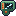
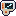
Recomendo A (a tela fica limpa e o laranja repete o das máquinas na lateral). Nome final: icon_constructor.png.
Referência principal: o cargueiro iso do dono (blocão hard-surface, chapas em camadas, painéis laranja na lateral, porta traseira aberta com rampa e luz azul dentro, trem de pouso, motores com luz azul) e a nave diagonal pro cockpit e as turbinas. Tudo original, por script (v07_r5_cargo.py, projeção 2:1). Casco ardósia (A) ou creme (B), contorno #1b1630, luzes ciano. Destroço: uma perna quebrada, motor traseiro apagado, pés e chapas soltos na areia, caixas caídas. Nome VESPER-7 pintado no costado esquerdo (fonte 3×5 cisalhada pela inclinação do iso).
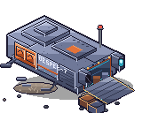
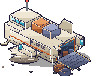
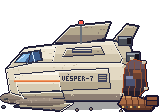
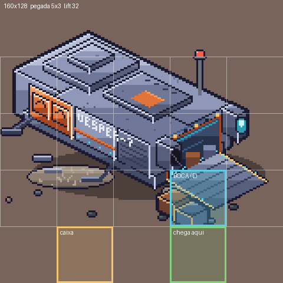
Sprite 160×128 (lift 32). Pegada de colisão 5×3 (160×96), aproximação do casco: o sprite sai dela por cima (antena) e a rampa/caixas saem pra baixo-direita. Boca do porão = tile (3,2) (onde a rampa encosta, alvo do E), chega por (3,3); caixa de saque em (1,3). Blit (tx·32, ty·32 − 32), ordenado pelo pé da pegada.
Mesmo design de vidro aprovado, em diagonal 2:1: tambor circular com janelões e domo de vidro estilhaçado (piso interior visível), eclusa como caixa iso com porta escura, luz azul e rampa descendo pra esquerda, módulo-tanque à direita e 2 painéis solares (um com canto arrancado). Sprite 256×168; pegada aproximada 8×4 (lift 40).
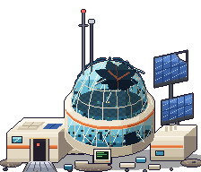
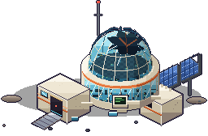
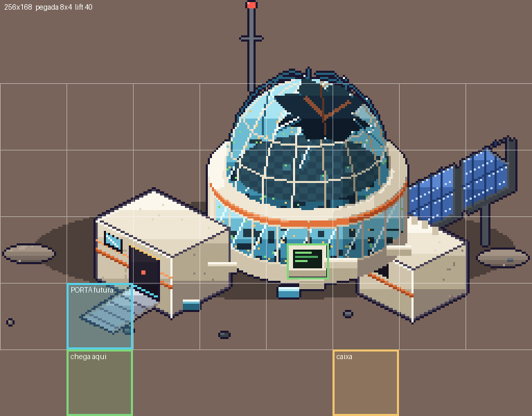
Terminal em pedestal na frente do tambor: rect (138,117,20,17) = tile (4,2), lido de (4,3). Futura porta = porta da eclusa, rampa terminando no tile (1,3), chega por (1,4). Caixa em (5,4).
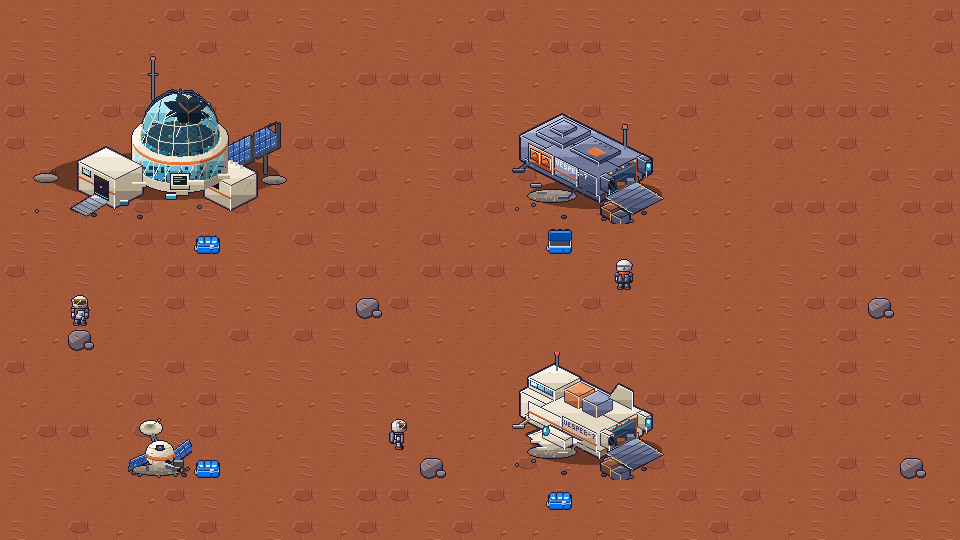
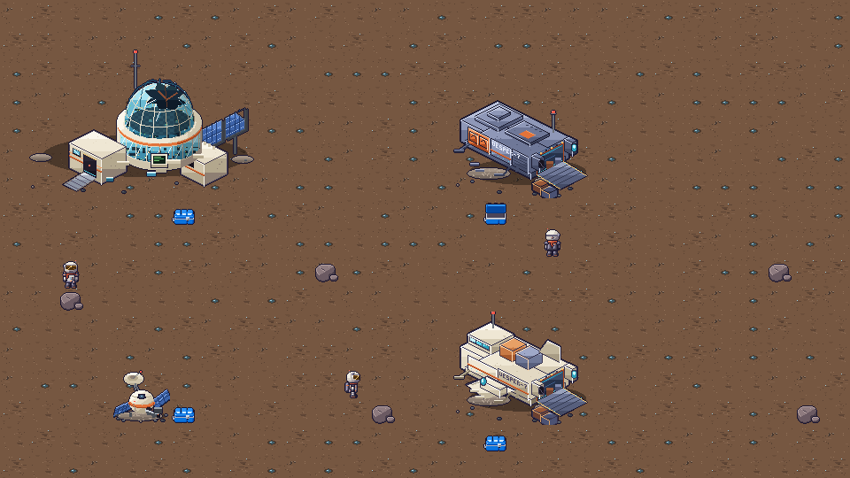
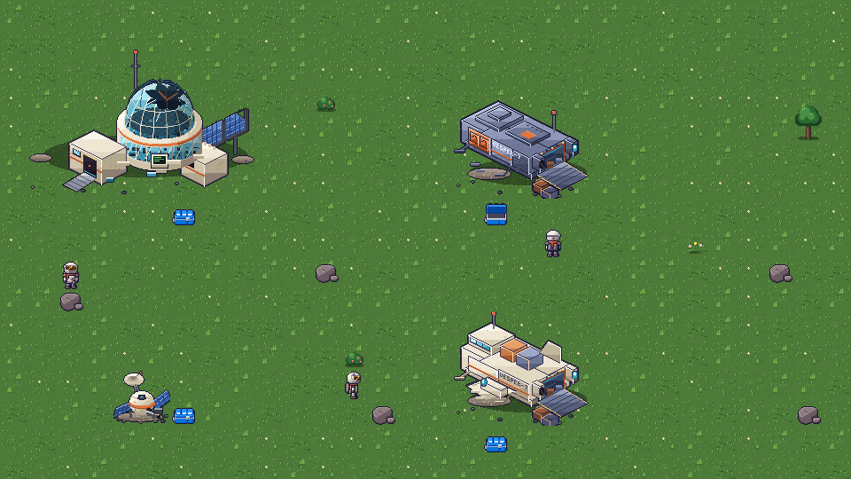
r5_wreck_cargo_{A,B}.png 160×128, pegada 5×3, lift 32, boca (3,2), chega (3,3), caixa (1,3); r5_wreck_module_glass.png 256×168, pegada 8×4, lift 40, terminal (138,117,20,17), porta (1,3), caixa (5,4); r5_icon_constructor_{A,B}.png 16×16. Sprites maiores que a pegada: ordenar pelo pé da pegada.r2_wreck_probe está descartada); ícone do construtor refeito como scanner de mão (2 candidatas). VÉSPER-7 continua pendente (nada mexido nela nesta rodada).| Item | Status |
|---|---|
Sonda (rodada 1, pendentes/wreck_probe.png, 64×64, 2×2, LED em (23,37)) | APROVADO |
| Props (16) e mesas de parede A/B, props de parede (6) | APROVADO |
| Base espacial de vidro 3/4 (7×5) | APROVADO por ora |
| Robô (3×2) e nave de passageiros (5×3) | APROVADO por ora |
| VÉSPER-7 (rodada 3, A/B) | pendente ("ainda não tá como eu quero") |
| Construtor (ícone) | 2 candidatas novas abaixo |
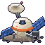
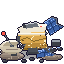
Referência (scanner de mão estilo Subnautica) usada só como estilo: aparelho retangular chunky de quinas chanfradas, tela grande escura com grade e um traço de HUD ocupando a frente, detalhes laranja de painel, empunhadura embaixo. Nada de cano nem haste. O jogo usa um só PNG 16×16 (icon_constructor) e o painel só amplia esse mesmo arquivo 3× (render.py), então não há outro asset: abaixo, o 1× ampliado e o 3× do painel.
A lê como "aparelho com tela" mesmo em 1× e combina com o branco/laranja das máquinas e da hotbar. B é mais fiel à referência, mas o verde destoa do resto da hotbar. Recomendo A. Nome final: icon_constructor.png (troca).
icon_constructor.png (16×16); nada de código muda. Sonda: voltar ao wreck_probe da rodada 1 (mesmo contrato de hoje, LED em (23,37)).Sprite 32×40 igual aos props (blit (tx·32, ty·32 − 8)), pra ficar no tile logo abaixo da parede de cima. O PNG cobre os 8 px de baixo da face da parede, e o tampo começa na linha 1 do PNG (= linha 17 da face de 24 px): o pé do monitor (linhas 16–18 da face) fica atrás da borda do tampo, então o monitor "senta" na mesa, sem fresta. Colidem (tile inteiro), 1 tile.
prop_wall_desk_a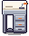
prop_wall_desk_bEncaixe no mock (monitor ligado + mesa A; diagrama + mesa B; à direita monitor apagado + mesa B e diagrama + mesa A), 2×:
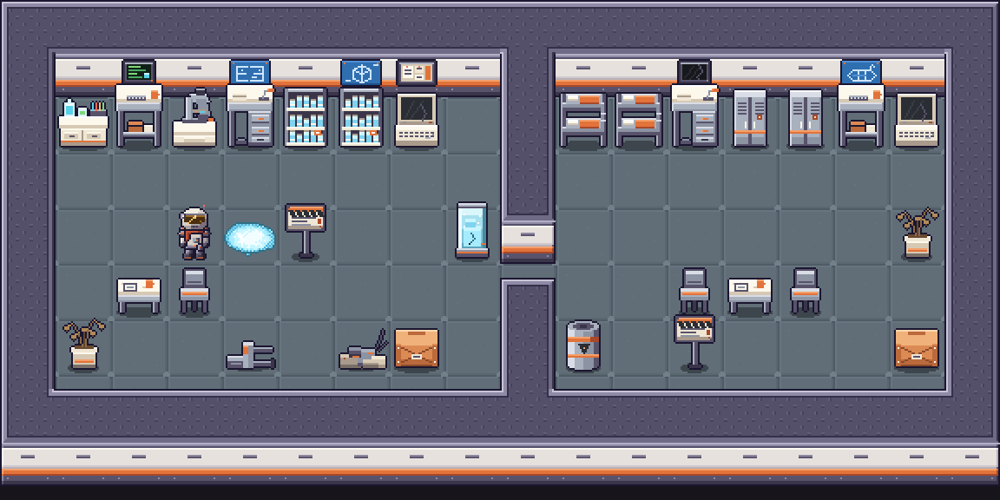
Mesmo desenho (domo de vidro, janelões, eclusa com porta e rampa, 2 painéis solares, domo estilhaçado), agora com volume: eclusa e módulo-tanque são caixas com teto visível, frente e lateral direita escura (escotilha, vigia e saídas de ar no teto); o tambor tem topo elíptico mais alto (ângulo de máquina do jogo), o domo deixa ver o piso interior de cima com as costelas de trás pelo vidro, as faces da direita escurecem e a sombra cai pra direita; painéis solares com espessura. Mesma pegada e marcas da rodada 2 (7×5, terminal (104,166,20,17), porta (1,4), caixa (4,5)).
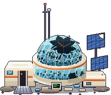
Casco facetado hard-surface: chapas poligonais sobrepostas em camadas, cada uma com borda escura de 1 px e realce na aresta de cima, frisos laranja, aberturas de ventilação, cockpit de vidro em faceta, motores e antena; nada de cápsula. Pegada cresce de 4×3 pra 5×3 (160 de largura) pra caber asa/motores sem espremer. Nome VESPER-7 pintado (fonte 3×5, com acento no E). Porão traseiro aberto com rampa e caixas; boca = tile (4,2) (a rampa), chega por (4,3); caixa de saque em (1,3).
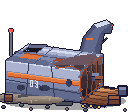
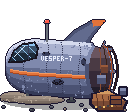
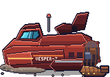
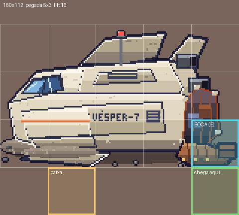
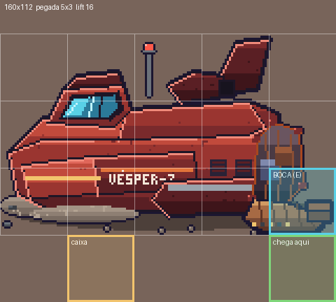
Recomendo A pelo creme (família dos destroços e máquinas) e a leitura de "cargueiro"; B é mais "nave de ação" e destaca mais no chão claro do estágio verde.
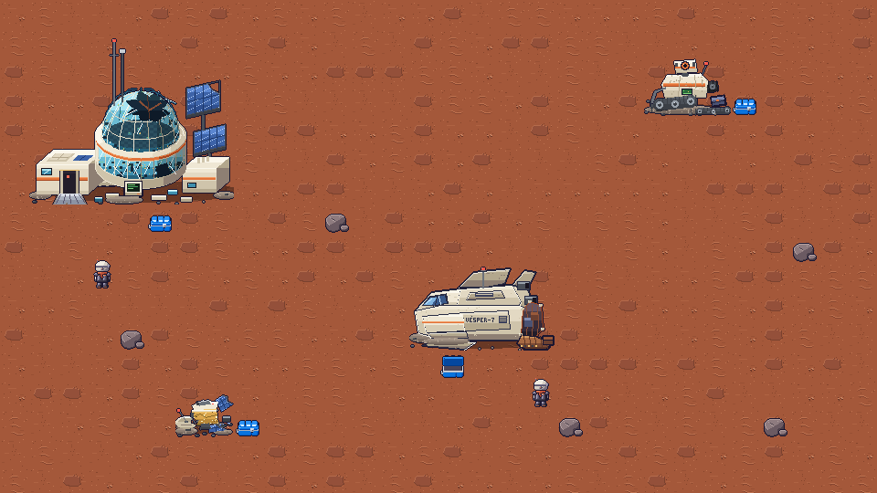
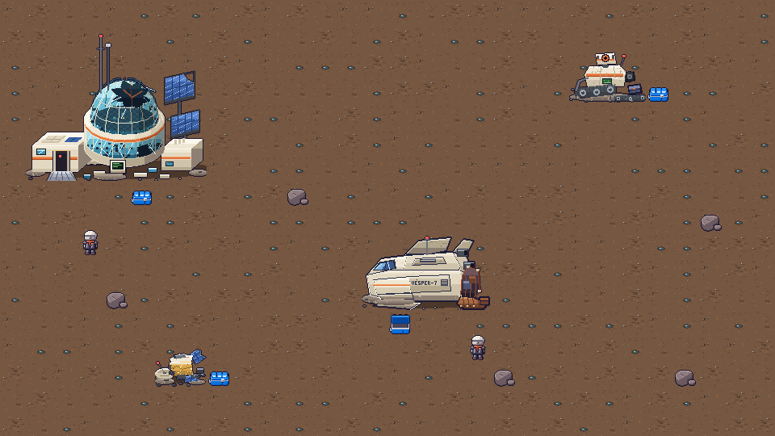
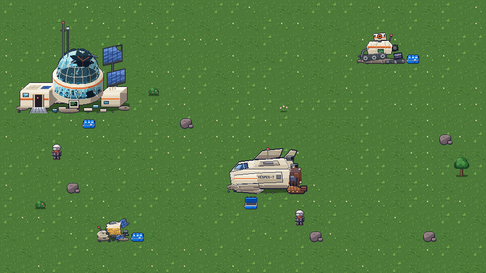
r3_wreck_cargo_{A,B}.png 160×112, 5×3, lift 16, boca (4,2), chega (4,3), caixa (1,3); r3_wreck_module_glass.png 224×192, 7×5, lift 32 (marcas iguais às da rodada 2); prop_wall_desk_{a,b}.png 32×40 (colide, colada na parede norte: só colocar com o tile de cima sendo parede) e icon_prop_wall_desk_{a,b}.png 16×16. Os props de parede wall_* (32×24) são desenhados na face da parede de cima, depois dela.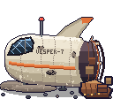
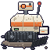
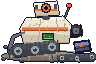
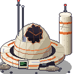
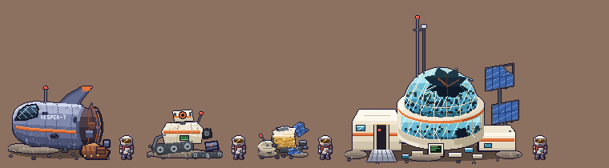
Casco de cápsula com volume (cilindro sombreado em faixas, nariz arredondado), cockpit de vidro com estrutura e reflexo, barbatana dorsal curva com ponta laranja, faixa laranja que acompanha a curva, antena, costuras de placa. Nome pintado: "VESPER-7" numa fonte própria 3×5 px (8 letras = 31 px de largura, legível em 1×); o É leva um pixel de acento. A popa termina num arco aberto (a boca do porão) com costelas, caixas, lábio de chapa torta, rampa de tábuas e 2 caixas caídas. Duas paletas: A ardósia (letras claras) e B creme (letras escuras). Recomendo A.
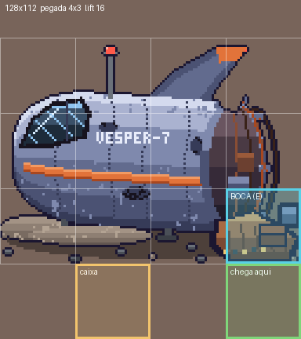
Boca do porão = tile (3,2) (onde a rampa encosta), chega por (3,3); caixa em (1,3). Mesmo contrato da rodada 1.
Barramento de instrumentos em caixa com manta térmica dourada, luneta no topo, bocal de empuxo, prato parabólico arrancado e caído no chão (borda torta, mordida, alimentador dobrado), uma asa solar quebrada em pé e outra caída, pernas de pouso entortadas, cratera/sulco de impacto embaixo. Sem haste com cabeça. Mudança de contrato: o LED vermelho do pisca agora fica em (40,26) (2×1 px; apagado #3b3f46).
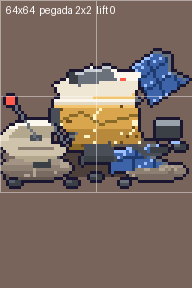
Rover como o #5 da referência: esteira da frente com rodas e sapatas, esteira de trás escura, chassi creme com faixa laranja e painel arrancado mostrando a placa verde, pescoço com cabeça de câmera (lente laranja), antena com LED, braço dobrado com a garra no chão, esteira solta caída à direita e caixote tombado. Pedi 3×2 (96×64, lift 0) pra a silhueta caber sem espremer; a caixa de saque fica em (3,1).
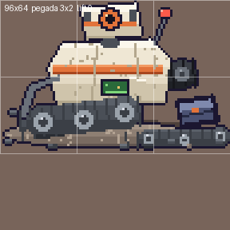
Inspirada no habitat da sua referência (módulos brancos, domo de vidro com estrutura, janelões, eclusa com porta e rampa, painel solar ao lado), tudo original: tambor central com faixa laranja e um anel de janelões em volta, domo de vidro com meridianos e paralelos, eclusa à esquerda com janelinha, porta escura e rampa de aço, módulo-tanque à direita e 2 painéis solares (um com canto arrancado). Ruína: domo estilhaçado (buraco irregular com vigas enferrujadas), rachaduras brancas, um janelão arrancado, estilhaços e placas no chão.
Como fiz o vidro em pixel art (sem alpha intermediário, como a água e o gelo do jogo): degraus de cian de cima pra baixo (#a8e4f2 → #6cbcd4 → #3f8fae → #26627c), reflexos duros em diagonal em branco gelo #e6fbff (faixas de 2 px que repetem a cada 23 px) e manchas de interior escuro (#1f3a46) com uns pontinhos quentes (luz) e verdes (planta) vistos através do vidro. O vidro partido mostra o interior mais escuro e as quinas ganham 1 px de branco e 1 de sombra.
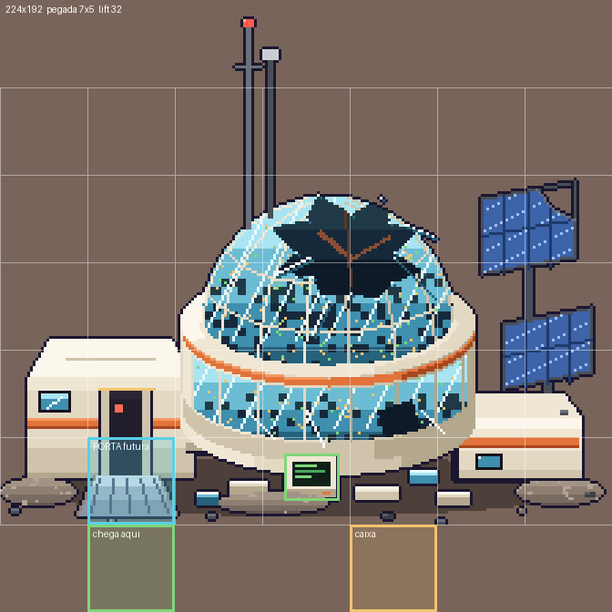
Pegada 7×5 (224×192, lift 32): terminal embutido na base do tambor, rect (104,166,20,17) = tile (3,4), lido de (3,5); futura porta = a porta da eclusa, tile (1,4) (ramp em volta; o jogador chega por (1,5)); caixa em (4,5), na frente do tambor. Colisão sugerida: todos os 35 tiles menos a quina de cima à esquerda e as de cima à direita fora das antenas (livre pra Dev decidir; o sprite tem cantos transparentes em cima). Pra camadas por dentro no futuro: a eclusa é a entrada e o domo/janelões já mostram o interior.
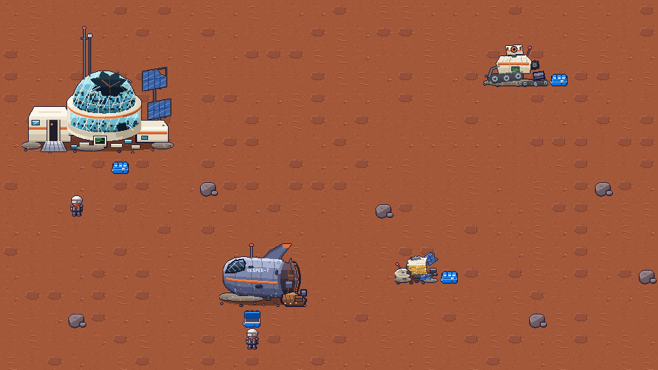
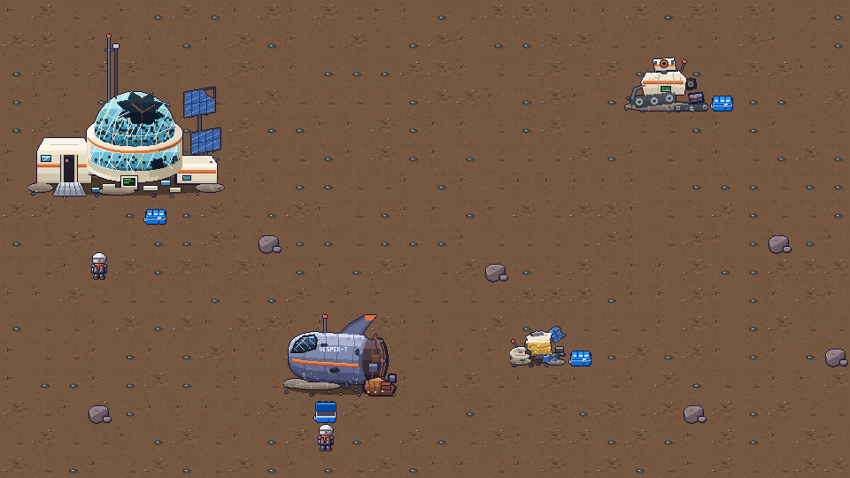
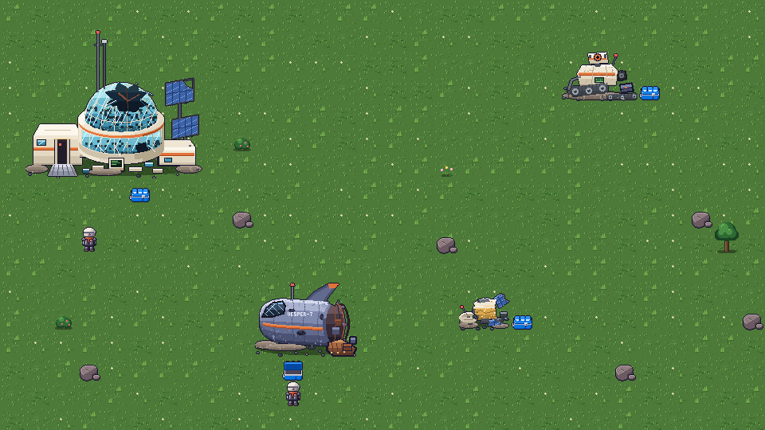
32×40 não: estes são 32×24, do tamanho da face da base_wall, desenhados por cima da face em blit (tx·32, ty·32 + 8) do tile de parede, depois dela, sem colisão. Vivem nas linhas 2–18 da face (passam por cima da faixa laranja) e só valem em parede que mostra face (tile de baixo é chão). Ícones 16×16 gerados do sprite.
| Sprite 6× | Ícone 4× | Id |
|---|---|---|
wall_monitor_onMonitor ligado | ||
wall_monitor_offMonitor apagado e rachado | ||
wall_bp_planDiagrama · planta da base | ||
wall_bp_shipDiagrama · nave | ||
wall_bp_iceDiagrama · cristal de gelo | ||
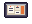 | wall_noticeQuadro de avisos |
Mock da sala atualizado (os props de parede estão na fileira de cima), 2×:
pendentes/: r2_wreck_cargo_{A,B}.png (128×112, 4×3, lift 16, boca (3,2)), r2_wreck_module_glass.png (224×192, 7×5, lift 32, terminal (104,166,20,17), porta (1,4), caixa (4,5)), r2_wreck_probe.png (64×64, 2×2, LED 2×1 em (40,26), caixa (2,1)), r2_wreck_robot.png (96×64, 3×2, lift 0, caixa (3,1)), wall_*.png (32×24) e icon_wall_*.png (16×16). Nomes finais sugeridos: wreck_cargo, wreck_module, wreck_probe, wreck_robot, prop_wall_<id>. A nave de passageiros (wreck_liner) e os 16 props continuam como na rodada 1.Props aprovados pelo dono: todos os 16 da seção 2 abaixo. Transportador, base, sonda e robô desta rodada foram substituídos pela rodada 2; a nave de passageiros segue valendo.
Referência do dono à esquerda; estilo do jogo à direita. Aproveitei da referência só a silhueta, a cor e o tipo de dano (casco ardósia com laranja, domo partido, rampa de carga caída, painel solar, esteiras); todo pixel é desenhado por script (v07_destrocos.py), com contorno #1b1630, luz de cima-esquerda e o mesmo creme/laranja das máquinas. Sem anti-aliasing, alpha só 0/255 e a sombra de chão em um nível (92).
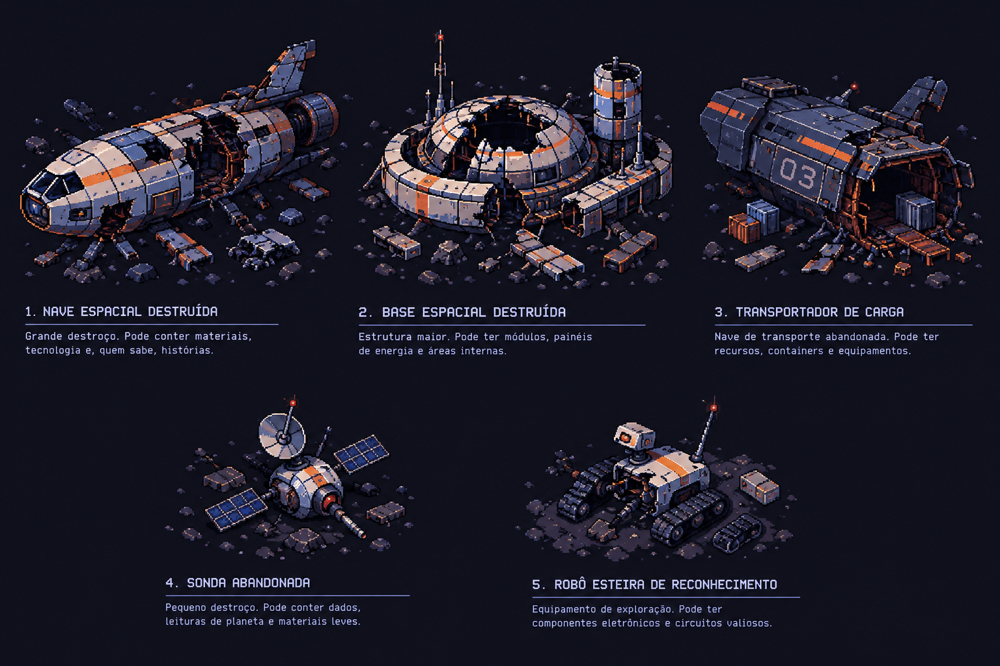
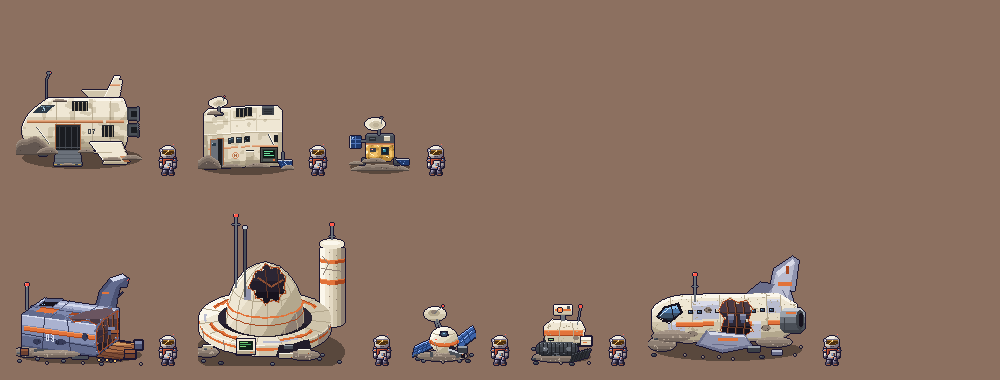
Em cima o que existe hoje (nave de carga, módulo, sonda). Embaixo o novo, na ordem: transportador de carga, base espacial 5×4, sonda, robô, nave de passageiros. 2×.
wreck_cargo, a VÉSPER-7)
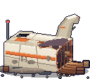
Mesmo desenho nas duas, só muda a paleta. O casco é uma caixa em 3/4: costado à frente, telhado em cima e a tampa traseira virada pra direita, aberta e rasgada, com as costelas do porão, duas caixas lá dentro, o chão do porão virando uma rampa de tábuas caída até a areia (com a faixa de perigo na soleira) e mais duas caixas tombadas pra fora. "03" no costado (hoje é "07"; no jogo o nome continua VÉSPER-7, o número do casco é arte; se o dono quiser igual ao texto, é só trocar os dígitos). O braço da cauda dobrado e a antena com luz vermelha sobem pros 16 px de cima. Recomendo A: é a da referência e destaca bem do chão vermelho; a B lê "mais uma nave de hoje".
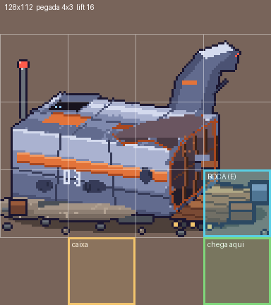
Tile da boca do porão (E): (3, 2) relativo ao canto da pegada (azul), onde cai a rampa. O player chega por (3, 3) (verde, fora da pegada, mesma lógica da caixa de hoje). A caixa de saque fica em (1, 3) como hoje.
wreck_module)
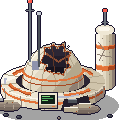
Anel de base com topo e parede (faixa laranja que dá a volta), domo partido com as costelas à mostra, torre à direita com cintas laranja, duas antenas, um vão caído no anel (frente-direita) com placas e entulho. Terminal na parede da frente: tela verde acesa (como o do módulo de hoje), dentro de um tile só. A é a base cheia, mais "lugar"; B é a compacta, ocupa menos do mapa e menos colisão. Recomendo A (o dono pediu "maior", e os tiles de colisão são só 20, dá pra nascer no mesmo critério de areia livre com folga de 2).
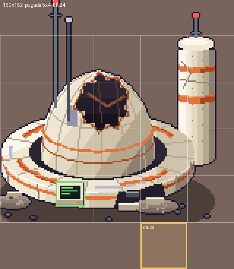
(38,124) 20×17, tile (1,3)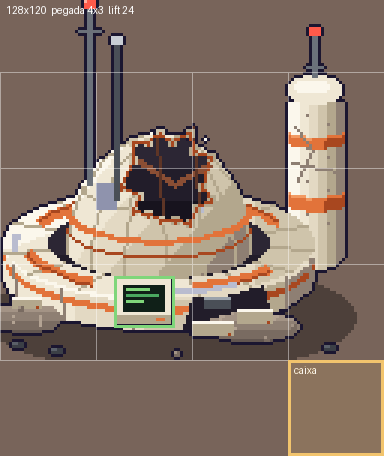
(38,92) 20×17, tile (1,2)wreck_probe)
Corpo esférico creme com cinta laranja, lente, parabólica torta no topo, 2 painéis solares (um caído, um erguido), bocal quebrado e a caixinha de instrumentos. O LED vermelho continua em (23,37) (2×1 px), então o pisca do draw_wreck de hoje funciona sem mudar nada.
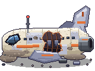
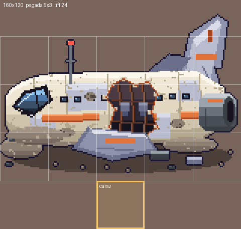
(2,3)Fuselagem comprida creme com painéis lavanda (as chapas azuladas da referência), cabine azul no nariz enterrado na areia, fileira de janelinhas, faixa laranja, rombo no meio do casco com costelas e duas poltronas à mostra, asa caída, deriva alta e nacela do motor. Proponho 5×3 tiles: é o maior depois do módulo e o mais comprido; a caixa em (2,3) (logo embaixo do rombo). Sem boca de entrada: o interior só existe na nave de carga.
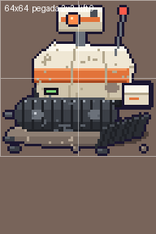
(2,1)Chassi creme com a faixa laranja, cabeça de câmera num mastro (lente laranja), antena com luz vermelha, braço dobrado, esteira da frente grande, esteira de trás escura e uma esteira solta caída ao lado, mais uma caixa de componentes. 2×2, igual à sonda, e dá "circuito e eletrônico" no loot.
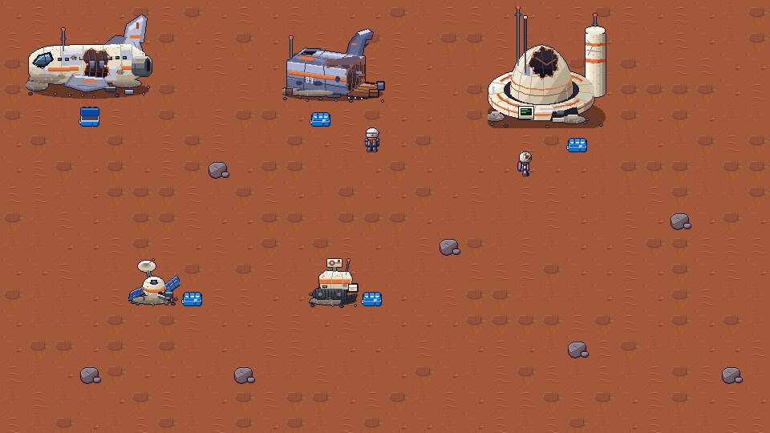
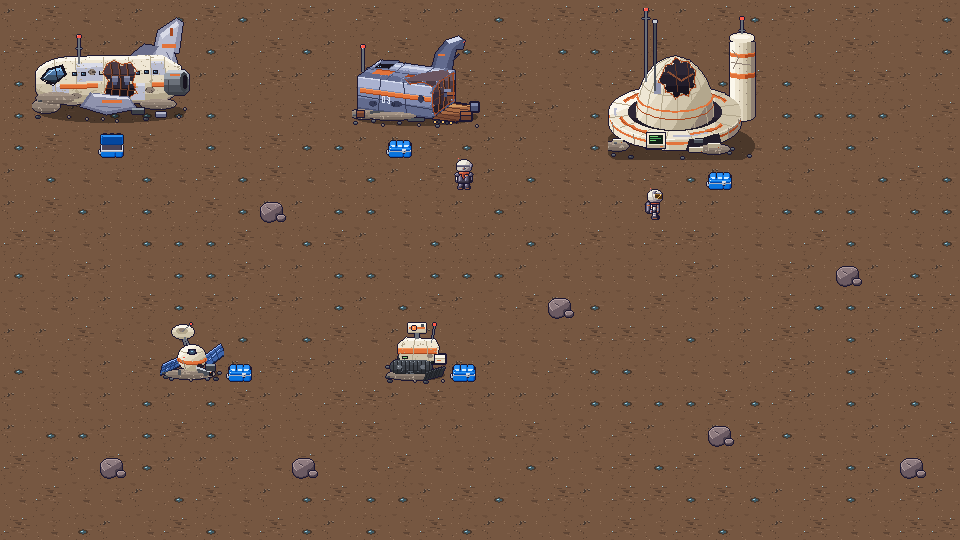
Estágio: igual aos destroços de hoje, o sprite é um só pros 3 estágios (não é recolorido): o chão muda embaixo e os montinhos de areia/terra do sprite usam um marrom-cinza neutro que funciona nos três. Conferido nas 3 prévias.
Mesma âncora do baú (chest.png 32×40: centro da base do tile, blit = (tx·32, ty·32 − 8), pé na linha 36 do PNG). A mancha de gelo é decal de chão (32×32, blit = (tx·32, ty·32), desenhado antes dos objetos, sem colisão). Cores: creme das máquinas, cinza-lavanda da base, laranja #e2733a, caixote na cor do ferro. Os ícones saem do próprio sprite (sem contorno, reduzidos, contorno refeito), então sempre batem com ele.
| Sprite 3× | Ícone 4× | Id | Colisão (proposta) | Como libera | Onde aparece |
|---|---|---|---|---|---|
prop_tableMesa | colide | liberado de cara | acampamento, interior, base | ||
prop_chairCadeira | não colide | liberado de cara | acampamento, interior, base | ||
prop_crateCaixote | colide | liberado de cara | acampamento, interior da nave, base | ||
prop_signPlaca de aviso | não colide | liberado de cara | todas as ruínas, base | ||
prop_chair_fallenCadeira caída | não colide | scanner | ruínas destruídas, nave | ||
prop_lab_benchBancada de laboratório | colide | scanner | laboratório, estação de derretedores | ||
prop_microscopeMicroscópio | colide | scanner | laboratório | ||
prop_sample_shelfEstante de amostras | colide | scanner | laboratório | ||
prop_bunkBeliche | colide | scanner | acampamento, alojamento da nave | ||
prop_lockerArmário | colide | scanner | acampamento, posto, nave | ||
prop_consoleConsole apagado | colide | scanner | laboratório, posto, cabine | ||
prop_sample_tankTanque de amostra | colide | scanner | laboratório, câmara fria | ||
prop_rubbleEntulho | colide | scanner | todas as ruínas | ||
prop_ice_stainMancha de gelo (decal) | não colide | scanner | laboratório, estação, câmara fria | ||
prop_dead_plantVaso com planta seca | não colide | scanner | acampamento, laboratório, base | ||
prop_barrelBarril | colide | scanner | acampamento, posto de perfuração |
Liberados de cara (proposta): mesa, cadeira, caixote e placa (os 4 mais "de qualquer base"). Cadeira e placa não colidem (dá pra andar por cima, não trava o corredor); o resto colide. Mancha de gelo e planta seca não colidem. Detalhe de lore opcional: no sample_tank tem um vulto fino escuro dentro do gelo (1 traço), sem dizer o que é; se não quiser a pista, é só pedir que eu tiro.
À esquerda um laboratório em ruína (bancadas, microscópio, estantes de amostra, tanque, mancha de gelo, cadeira caída, entulho); à direita um alojamento / base do player (beliches, armários, mesa com cadeiras, console, barril). Feito com o base_wall (autotile) e o base_floor de hoje; o Explorador na porta é pra escala. Props encostados na parede ficam certos (a face da parede de 24 px passa por trás do pé).
O construtor só tem um sprite no jogo: o ícone 16×16 (icon_constructor.png, usado na hotbar, no inventário e no fabricador; o render.py amplia 3× pro painel). Não existe sprite do construtor na mão do player. Duas candidatas, mesma paleta da atual:
A lê "pistola com visor de scanner", mais legível em 16 px. B mantém a silhueta de hoje e põe o módulo onde a mão não cobre, mas o tambor vira um bloco cinza. Recomendo A. O verde da tela é o "OK" da UI, lê como "escaneando".
assets/sprites/. Depois do ok, o gerente copia os escolhidos de pendentes/ com o nome final da coluna "arquivo". Tudo escala 1:1, alpha 0/255 (mais a sombra de chão em 92 nos destroços e props).| Arquivo final | Tamanho | Pegada (tiles) | lift | Âncora e blit | Marcas |
|---|---|---|---|---|---|
wreck_cargo.png (troca) | 128×112 | 4×3 | 16 | igual a hoje: ax=(tx+2)·32, ay=(ty+3)·32, blit (tx·32, ty·32−16); colisão os 12 tiles | Boca do porão = tile (3,2) (alvo do E); chega por (3,3); caixa (1,3) |
wreck_module.png (troca, cresce) | A: 160×152 · B: 128×120 | A: 5×4 · B: 4×3 | 24 | ax=tx·32+W/2, ay=(ty+h)·32, blit (tx·32, ty·32−24); colisão todos os tiles da pegada | MODULE_TERMINAL_RECT A (38,124,20,17) (tile (1,3), lê de (1,4)); B (38,92,20,17) (tile (1,2), lê de (1,3)); caixa A (3,4), B (3,3) |
wreck_probe.png (troca) | 64×64 | 2×2 | 0 | igual a hoje: blit (tx·32, ty·32) | caixa (2,1); LED 2×1 em (23,37) |
wreck_liner.png (NOVO) | 160×120 | 5×3 | 24 | ax=(tx+2.5)·32, ay=(ty+3)·32, blit (tx·32, ty·32−24); colisão os 15 tiles | caixa (2,3); sem terminal (registro de bordo na caixa, como a nave de hoje) |
wreck_robot.png (NOVO) | 64×64 | 2×2 | 0 | blit (tx·32, ty·32); colisão os 4 tiles | caixa (2,1) |
prop_<id>.png ×15 | 32×40 | 1×1 | 8 | como o baú: ax=tx·32+16, ay=(ty+1)·32, blit (tx·32, ty·32−8), ordenado por ay; caixa de colisão sugerida igual à das máquinas de 1 tile (tx·32+4, ty·32+14, 24, 18) | colide: ver tabela da seção 2 (cadeira, cadeira caída, placa e planta seca não) |
prop_ice_stain.png (decal) | 32×32 | 1×1 | 0 | blit (tx·32, ty·32), desenhado antes de tudo que é objeto (junto do chão); sem colisão | pode ser a única decoração do tile |
icon_prop_<id>.png ×16 | 16×16 | - | - | ícone do construtor (aba Decoração), mesmo padrão dos icon_base_* | - |
icon_constructor.png (troca) | 16×16 | - | - | o render.py já carrega por esse nome (hotbar, inventário, fabricador; 3× no painel). Nenhum outro sprite do construtor existe | - |
ay); os 24/16 px de lift sobem pro tile de cima e cobrem o player que passar atrás.SPECS[...].sprite_size), não o antigo.terminal.png).